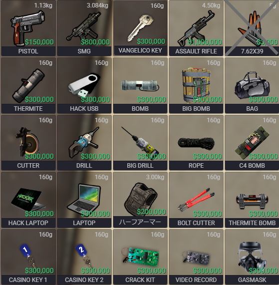
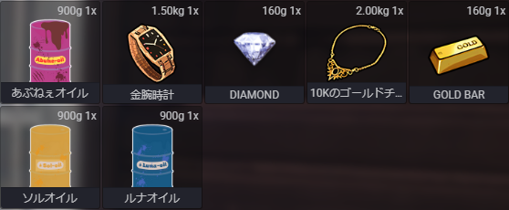

【全プレイヤー】基本的な心構え・マナー
サーバー内で活動する上での心構えや交流、禁止行為に関する基本ルール。
- ストリーマーとして常識ある行動を心がけること。
- 相手への思いやりを持って行動する。
- サーバー内の”情報漏洩”は禁止。
- 言動・行動に責任を持ち、ルールを守ること。
- サーバー内で起こったことはサーバー外に持ち出さない（全てRPとして理解する）。
- 公序良俗に反するキャラクターネーム禁止（メインネームは活動名で統一）。
- 過度なストーカー行為、セクハラ行為は禁止。
- 他プレイヤーと交流を大切にし、街ではマイクをオンにして会話すること。
- 連絡事項には必ずレスポンスを行う。
- 提出締め切りを守る。（遅れる場合は事前に相談）
- ディスコードのフレンド申請は双方合意の上で行うこと。
【全プレイヤー】トラブル・違反対応
サーバー内で発生する問題や違反行為への対応方法に関するルール。
- サーバー内の問題はRPで解決すること。
- 明らかなルール違反は運営に報告（クリップ必須、その場で直接指摘禁止）。
- バグやグリッチは運営に報告、故意利用は禁止（重い処分あり）。
- 他プレイヤーの配信やアーカイブを利用したゴースティングは禁止。
- 外部ツールを使った通話・情報共有は禁止（例外：日程調整や犯罪場所メモのみ可）。
- ルール違反を見かけたら報告する。
【全メンバー】イベント・企画
イベントや企画を円滑に実施するためのルール。
- 開催予定のイベントや企画は早めに共有する。（告知・制作・実行確認のため）
【全メンバー】表示名ルール
サーバー上で使用する表示名のルール。
- サーバー上の名前は活動名（ふりがな）にする。例：猫照めにあ(ねこてるめにあ)
【全プレイヤー】チャット・コマンド利用制限
サーバー内で使用禁止となっているチャットやコマンドに関するルール。
- テキストチャットおよび /me コマンド禁止。
- /carry の悪用禁止（他プレイヤーの妨害行為）。
【全プレイヤー】アバター・キャラクター制限
使用可能なアバターやキャラクターに関する制限。
- 初期アバター / NPCスキン / 透明スキン禁止。
- プレイヤーは1人1キャラのみ。
【全プレイヤー】戦闘・コンバット関連ルール
コンバットログや戦闘時のルール、装備制限について。
- コンバットログはできる限り避ける。
- やむを得ない場合は全体チャットで報告後退出。
- ダウン・大ダウン時は医療施設で相応の代金を支払う。
- 犯罪中のコンバットログは次回IN時に指名手配30分＋必要に応じて医療費支払い。
- 外部レティクル禁止（GTAデフォルトのみ使用可）。
- 警察・救急隊の犯罪行為禁止。
【全プレイヤー】リログ・リスポーン関連
移動目的での再接続やリスポーンに関する禁止事項。
- 移動手段としてのリログ（再接続）、リスポーン（ダウン後E長押し）禁止。
- リスポーン位置変更は「最後の位置」以外禁止。
【全プレイヤー】定期再起動時の制限
サーバー定期再起動前後の犯罪行為に関する制限。
【全プレイヤー】職業関連ルール
就職や職業制限、勤務状態の切り替えに関するルール。
- 退勤時は必ずジョブの勤務状態をオフにする。
- 白市民（犯罪歴なし）：メイン職＋副職2つ。
- 黒市民（犯罪歴あり）：メイン職＋副職1つ。
- タクシーは副職として利用可能（違法薬物ヒントはなし）。
【全プレイヤー】ダウン・大ダウン時の行動制限
ダウン・大ダウン時の行動制限や救助要請の手順。
- ダウン時は包帯延命禁止、無線連打禁止（場所通知は可）、エモート禁止、日常会話は可（有利情報は不可）。
- 大ダウン時は情報共有禁止、無線連打禁止（場所通知は可）、エモート禁止。
- 大ダウン状態で5分経過 → 声で救助要請。
- 10分経過しても救助なし → 運営サポへ連絡。
【全プレイヤー】犯罪・プレイヤーロブ関連
犯罪行為やプレイヤーロブの制限、NPCへの行動について。
- 基本的にプレイヤーロブは禁止。
- ギャング同士のみ可（お金・携帯は禁止、補填なし）。
- 必要以上のNPC殺害禁止（サーバー負荷防止）。
【全プレイヤー】救急隊への通知
救急隊への通知回数や注意事項について。
- 救急隊への通知は3分に1回程度。
- 連打は全通知が流れ混乱するため禁止。
【全プレイヤー】禁止車両
サーバー内で使用禁止となっている車両の種類。
- 武装が可能となる車両。
- 殺傷能力のある車両。
- 飛行機能のある車両（ヘリは可）。
【全プレイヤー】禁止カスタム
車両やヘリのカスタムに関する禁止事項。
- 武装ができるカスタム（防弾はタイヤのみ可）。
- 殺傷能力が追加できるカスタム。
- ヘリのカスタム（アーマーのみ可）。
【全プレイヤー】ステッカー利用ルール
ステッカーの利用、申請、設置に関するルール。
- 救急・警察・メカニックは施設が大きくメンバー数が多いため、一人1枚まで可。
- 自身の陣地にのみ貼ること。
- 乗り物への貼付はメカニックに依頼すること（1台につき2枚まで可）。
- メカニック職ならメカニック施設、警察なら警察施設など所属施設に貼ること。
/decals でステッカーメニューを開く。/clear_graffiti でステッカー削除。- 上記コマンドは T を押して記入後エンターで実行。
- 個人的なステッカー申請は1人2枚まで、事前申請必須。
- 反映まで1～2日かかる場合あり。
【ギャング】活動・服装・車両ルール
ギャング活動や車両に関する基本ルール。
- ギャング活動中はギャング服着用必須。小型ギャングは私服OK。
- ギャング活動時の車両カラー統一必須（盗んだ車使用時は除く）。
- 中型・大型犯罪は盗んだ車での活動禁止。
- 傭兵集団の場合は濃いめの青で統一。
- ギャング服のなりすまし（犯罪未参加時の着用）は禁止。
- ギャングは犯罪してない時はギャング服禁止。
【ギャング】押収品該当リスト


武器・道具
- PISTOL
- SMG
- VANGELICO KEY
- ASSAULT RIFLE
- THERMITE
- HACK USB
- BOMB
- BIG BOMB
- BAG
- CUTTER
- DRILL
- BIG DRILL
- ROPE
- C4 BOMB
- HACK LAPTOP
- LAPTOP
- ハーフアーマー
- BOLT CUTTER
- THERMITE BOMB
- CASINO KEY 1
- CASINO KEY 2
- CRACK KIT
- VIDEO RECORD
- GASMASK
報酬品
- あぶねぇオイル
- 金腕時計
- DIAMOND
- 10Kのゴールドチェーン
- GOLD BAR
- ソルオイル
- ルナオイル
その他
【ギャング】犯罪種別・人数制限
犯罪の種類ごとの内容と参加人数の制限。
- 小型犯罪（最大4人）：車両窃盗、ATM強盗、空き巣強盗、コンビニ強盗。
- 中型犯罪（最大6人）：フリーカ銀行強盗、宝石強盗、ボブキャット、ナイトクラブ。
- 大型犯罪（最大10人）：カーヘイスト、客船強盗、オイルリグ、ヒューマンラボ、ユニオンヘイスト、アーティファクト強盗、カジノヘイスト、パシフィック。
【ギャング】大型犯罪の介入（横取り）について
ギャング間での大型犯罪に対する介入・横取りルール。
- 大型犯罪に対して他ギャングが介入し横取り可能。
- 横取り可能なのは大型犯罪のみ。
- 合同犯罪は許可。
【ギャング】犯罪者の職業制限
犯罪者が就ける職業と禁止事項。
- 犯罪者は飲食店・アルバイト・日雇い以外の職につけない。
- 警察・救急隊の職は禁止。
- 犯罪者の主な収入は飲食店やアルバイト給料と犯罪報酬。
【ギャング】犯罪時のアイテム使用・罰金
犯罪者が使えるアイテムや犯罪失敗時の罰金について。
- 犯罪者が使えるアイテムはブラックマーケット、クラフト作業台、犯罪成功時の入手品のみ。
- 犯罪中や指名手配中に捕まると罰金あり。
- 犯罪終了後の指名手配期間中は変装禁止、名前表示必須。
- 深海に沈んだ人がFボタン押した場合、警察署に出頭で罰金なし・手荷物押収。
- 誤って救急隊に信号を送った場合も同様。
【ギャング】犯罪禁止時間・日程予約
犯罪禁止時間前の準備と中型・大型犯罪の予約について。
- 犯罪禁止時間の20分前までに準備を終え開始すること。
- 中型・大型犯罪は警察に連絡して日程予約をしてから開始（フリーカ銀行強盗は例外）。
【ギャング】人質ルール
コンビニ強盗・フリーカ銀行強盗などでの人質に関するルール。
- 人質必須（コンビニ・フリーカ銀行などで必ず必要）。
- 白市民のみではなく、黒市民も同様に対象となります。
- 人質1人につき1つの要求まで可能。
- 人質殺害時はすべての要求は無効となる。
【ギャング】犯罪行為のクールタイムについて
小型犯罪・中型犯罪などの犯罪行為のクールタイムに関するルール。
- 小型犯罪・中型犯罪ともに、個人ごとのクールタイムは30分です。
-
クールタイムのカウント開始は以下のいずれかの時点から行います。
-
チェイス（追跡）が終了したと判断できる時点
（例：警察が来なかった場合、十分離れて見つからないと判断した時）
-
警察に捕まり、釈放（開放）された時点
【ギャング】コンビニでの銃撃戦について
小型犯罪の銃撃戦に関するルール。
-
コンビニでの銃撃戦を行う場合、警察が到着した段階で、
店内奥の金庫付近にいる仲間のメンバーが、大声で以下の趣旨のようなRPセリフを発してください。
例：「人質なんかいねー！俺は覚悟もってやってるんだ！」
-
この発言はロールプレイの一環として必須です。
【ギャング】荷物を車に隠す行為について
車両に荷物を入れて隠す行為に関するルール。
-
車に荷物（例：銃〈ライセンス未取得〉や薬物など犯罪に関わる物、報酬）を入れて隠すことは可能です。
-
ただし、これらの物品を「持っている」こと自体が犯罪にあたります。
車に入れても犯罪であることに変わりはありません。
-
逃走中や指名手配中などに警察から怪しまれた場合、車両を確認される可能性があります。
-
ただし、車をガレージに収納してしまった場合は警察による確認は行われません。
【ギャング】犯罪時の禁止事項・バグ対策
犯罪時の禁止事項・バグ対策に関するルール。
- 警察への過度な暴言・煽り禁止
- 指名手配中にサーバー抜け時はDiscord報告必須
- 確殺中の敵位置共有や確殺防止の連打禁止（救急連絡程度はOK）
- 犯罪報酬を車に隠す場合は警察に見せない
（詳細は、荷物を車に隠す行為についてに記載があります）
- 指名手配中のグリッチ・バグ利用禁止（隠れ・逃走方法）
- 飛行乗り物での犯罪禁止（ヘリ以外）
- 車両にロックをかけて警察の仕事を増やす行為禁止
- 犯罪ができないバグ時は警察に連絡
- 全ギャング完全犯罪禁止（回収せず逃走禁止）
- グレネード・ロケットランチャーは大型犯罪・ボブキャットのみ使用可
- 犯罪禁止時間に麻薬ファーム禁止（水を除く）